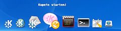

KXDocker
Archivierte Anleitung
Dieser Artikel wurde archiviert, da er - oder Teile daraus - nur noch unter einer älteren Ubuntu-Version nutzbar ist. Diese Anleitung wird vom Wiki-Team weder auf Richtigkeit überprüft noch anderweitig gepflegt. Zusätzlich wurde der Artikel für weitere Änderungen gesperrt.
Zum Verständnis dieses Artikels sind folgende Seiten hilfreich:
Achtung!
Das Projekt kxdocker wurde eingestellt. Das bedeutet, dass es nicht mehr weiter entwickelt wird und nicht mehr verwendet werden sollte und es ist seit Gutsy nicht mehr in den Quellen.
Das Nachfolgeprojekt heißt XQDE: http://xqde.xiaprojects.com/  Dieses ist aber noch nicht besonders weit entwickelt.
Dieses ist aber noch nicht besonders weit entwickelt.
Das Dock ist normalerweise kein Bestandteil der Grafischen Benutzeroberfläche von KDE. Es kann aber leicht nachinstalliert werden. Es ist (ähnlich wie das Panel von GNOME oder die Kontrollleiste von KDE) der zentrale Zugriffspunkt auf häufig genutzte Programme.
Natürlich ist es nicht irgend eine Startleiste, die KXDocker-Startleiste ist sowohl effektvoll als auch grafisch sehr nett gestaltet.
Installation¶
Es sind [1] folgenden Pakete nötig:
kxdocker (universe, [2] bis Feisty)
kxdocker-data(universe bis Feisty)
Hinweis:
Die kxdocker-Pakete scheinen in Edgy fehlerhaft zu sein. Umgehen lässt sich dieses Problem, indem man sich die Pakete von Debian Etch herunterlädt und installiert (kxdocker und kxdocker-data ).
Linkto-Suche: Fremdquellen

Start von KXDocker¶
KXDocker kann aus dem K-Menü im Punkt "Dienstprogramme" gestartet werden. Alternativ ist es auch über den Befehl kxdocker ausführbar.
Die KXDocker-Bar ist in der Regel am unteren Bildschirm zu sehen. Wenn man mit der Maus über ein Icon fährt, wird es etwas größer. Neben den Menüpunkten befinden sich auch (wenn konfiguriert) die aktiven Tasks.
Die Applets lassen sich beliebig erweitern. Auch Themes gibt es für das Dock. Es lassen sich sogar Timer einbinden. Das Dock nistet sich nach dem Start auch im KDE-Systemtray ein. So ist der Zugriff auf die Konfiguration nur ein paar Mausklicks entfernt.
Da man sogar jedem Objekt ein eigenen Programmcode zuordnen kann, handelt es sich hier um Applets.
Einstellungen¶
KXDocker ist ein sehr flexibles Programm. Das Einstellungs-Menü befindet sich im System-Bereich der Kontrollleiste von KDE. Ein Linksklick auf das Icon hebt das Dock auf die aktuelle Ebene des Desktops, auch Fenster werden überspiegelt.
Mit einem Rechtsklick können dann die ersten Einstellungen vorgenommen werden. "Configurator" öffnet den Dialog zum konfigurieren des Programms.
Um ein Applet zu entfernen, genügt es, auf das Applet mit der Maus zu fahren und mit einem Rechtsklick den Punkt "remove from dock" anzuwählen.
Man muss das Einstellungs-Menü aufrufen und in der Registerkarte den Punkt "Objekte" aktivieren. Hier lassen sich die Applets auswählen, und so können sie von unten nach oben (bzw. von links nach rechts) verschoben werden.
Mit dem Klick auf den Zauberstab können weitere Applets angefügt werden.
Hier finden sich einige Einstellungsmöglichkeiten:
| Informationen | |
| Option | Beschreibung |
| Name | Der Name für das Applet, wird nicht angezeigt |
| Gruppe | Hier können Gruppen definiert werden |
| className | Das Erscheinungsbild im Verhalten des Applets |
| Angezeigter Text | Text erscheint über dem Icon des Applets |
| Bilder | |
| Icon | Icon Auswahl Dialog von KDE |
| Arrow Image | Bild im Pull Down Menü (ausführen) |
| Drop Image | Bild im Pull Down Menü (Sonderaktion) |
| Aktionen | |
| onClickExex | Befehl, der beim klick auf das Icon ausgeführt werden soll. |
| onDropExex | Befehl für die Sonderaktion. Dateinamen können als Variable %1 definiert werden |
Wenn alles richtig eingestellt ist, kann das Applet mit einem Klick auf den Haken erzeugt werden.
Um den Starter beim Systemstart starten zu lassen, muss das Programm in den KDE-Autostart verlinkt werden. Dies geschieht im Terminal [3] mit
ln -s /usr/local/kde/bin/kxdocker ~/.kde/Autostart/
- Erstellt mit Inyoka
-
 2004 – 2017 ubuntuusers.de • Einige Rechte vorbehalten
2004 – 2017 ubuntuusers.de • Einige Rechte vorbehalten
Lizenz • Kontakt • Datenschutz • Impressum • Serverstatus -
Serverhousing gespendet von